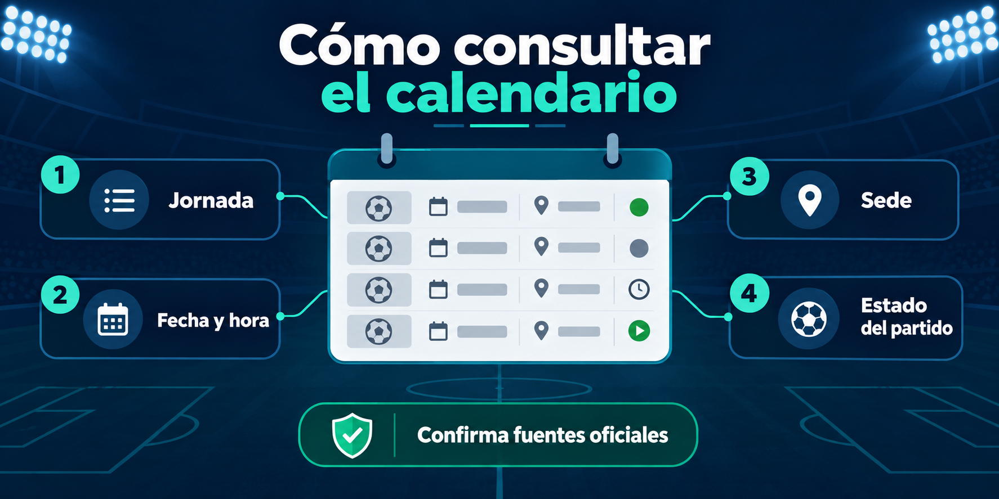

Puebla
1 - 1León
Consulta fechas, horarios, sedes y resultados del calendario de Liga MX Apertura 2026. Aquí se conserva el archivo de la Jornada 11, programada del 9 al 11 de octubre, con el corte del 10 de octubre. No es una cartelera de partidos de hoy.
La Jornada 11 del Apertura 2026 comprende del viernes 9 al domingo 11 de octubre. Los horarios corresponden al centro de México. Los marcadores del viernes y la programación restante se verificaron el 10 de octubre; cualquier cambio posterior debe confirmarse con la competición o el club.
Archivo de programación. Resultado no incorporado en este corte.
Archivo de programación. Resultado no incorporado en este corte.
Archivo de programación. Resultado no incorporado en este corte.
Archivo de programación. Resultado no incorporado en este corte.
Archivo de programación. Resultado no incorporado en este corte.
Archivo de programación. Resultado no incorporado en este corte.
Archivo de programación. Resultado no incorporado en este corte.

El calendario disponible conserva la programación de la Jornada 11, del 9 al 11 de octubre de 2026, con corte del 10 de octubre. Las fechas transcurridas son un archivo. Un encuentro sin marcador actualizado no debe interpretarse como pendiente de jugar.
Una jornada de fase regular agrupa encuentros de distintos clubes. En Liguilla se publican series de ida y vuelta, y los cruces dependen de los equipos que avanzan. Por eso una fecha prevista de ronda no confirma por sí sola rival, sede ni hora. Consulta el cuadro de Liguilla y la guía de la final por separado.
Antes de guardar una fecha, revisa torneo, local, visitante, estadio y zona horaria. Los horarios aquí están expresados en Ciudad de México. Si el organizador reprograma un partido, conserva la jornada de origen como referencia y verifica su nueva fecha.
Revisión editorial: . Las fechas de corte de las estadísticas se indican por separado.
Esta página separa tres tipos de información: partidos programados, marcadores finales y archivos de jornadas anteriores. Así puedes identificar si un dato todavía puede cambiar o si ya corresponde a un resultado confirmado.
La Jornada 9 se disputó del 18 al 20 de septiembre. Consulta sus nueve marcadores en la página de resultados de la Jornada 9. También puedes abrir la Jornada 8 o el índice de jornadas.
Las horas se muestran en tiempo del centro de México. Una sede, fecha o transmisión puede cambiar por decisiones deportivas, logísticas o de televisión. Para resultados ya disputados usa resultados de Liga MX; para revisar el efecto en la clasificación abre la tabla general.
Los resultados del viernes y la agenda restante de la Jornada 11 se revisaron el 10 de octubre de 2026. Esta página conserva una fecha del archivo y enlaza el resto del torneo; no sustituye las comunicaciones oficiales. Para la competencia femenil consulta el calendario de Liga MX Femenil.
Abre el índice de jornadas para localizar una fecha concreta. Esta página destaca la Jornada 11; las jornadas anteriores deben consultarse junto con sus marcadores.
La Jornada 11 se programó del viernes 9 al domingo 11 de octubre de 2026. El viernes se jugaron Puebla vs León y Tigres vs Toluca; los otros siete encuentros estaban programados para sábado y domingo y sus resultados no se han incorporado en este corte.
Las horas corresponden al centro de México. Si consultas desde otra zona, convierte el horario y confirma también la fecha local.
Los marcadores confirmados están en resultados de Liga MX. En este calendario también se señalan los partidos de la jornada del archivo que ya finalizaron.
La fase regular y la fase final son etapas distintas. Consulta el formato de Liguilla; los cruces y horarios se muestran cuando quedan confirmados.
Da prioridad al anuncio más reciente del club o de la competición. Consulta las fuentes y metodología para conocer la fecha de corte y reportar una corrección.
Elige jornada, agenda de club o archivo de encuentros. Usa estos recorridos para pasar de la explicación general a la consulta concreta.
Estas fichas documentan encuentros de fechas anteriores. No se presentan como próximos partidos; revisa la edición y la fecha de cada ficha antes de utilizar su horario.